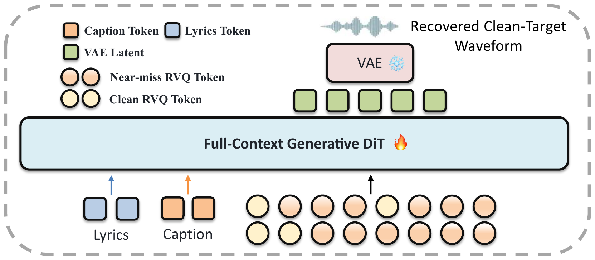

Full-song context
Non-causal self-attention models the complete acoustic latent sequence rather than isolated local windows.
Music generation · Audio demo
FullDiT treats acoustic rendering as full-context generation from an imperfect discrete plan, combining frame-aligned RVQ conditions, independently encoded lyrics and captions, and non-causal full-song context.
Method
Error-Matched Distractor Conditioning (EMDC) exposes the renderer to realistic codec-token mistakes without changing the acoustic target. Four-way classifier-free guidance independently controls codec, lyric, and caption conditioning at inference time.

Non-causal self-attention models the complete acoustic latent sequence rather than isolated local windows.
Codebook-specific replacement rates and cosine-KNN distractors mimic plausible language-model errors.
4-CFG separates codec, lyric, and caption guidance increments for controllable rendering.
Full-length samples
Listen to the full tracks. Audio loads only after you press play.
Prompt. Alternative metal driven by thick, distorted guitars, thunderous drums, gritty male vocals, and an anthemic narrative about breaking free and reclaiming one's identity.
Prompt. An intimate midnight vocal jazz track exploring the theme of lost love through smoky vocals and a sparse acoustic arrangement.
Prompt. An upbeat reggae-pop New Year's Eve celebration driven by acoustic guitar upstrokes, a syncopated electric bassline, punchy drums, bright brass, and a cheerful male lead vocal, with an energetic and uplifting mood.
Prompt. A mellow contemporary R&B instrumental built from syncopated electric bass, laid-back drums, rhythmic electric-piano chords, warm synth pads, and seamless shifts between standard and double-time feels, ending in a slow fade-out.
Controlled comparison
Prompt, lyrics, upstream LM codec tokens, duration, random seed, sampler, and guidance tuple
(1, 2, 1) are fixed. Only the FullDiT configuration changes.
A dreamy Folk Pop track evoking the feeling of falling asleep under the stars, featuring a soft male vocal and gentle acoustic instrumentation.
Full-song context, renderer-side caption and lyrics, and EMDC.
Local 30-second training context; otherwise matched to M1.
No renderer-side caption or lyric conditions; otherwise matched to M1.
No Error-Matched Distractor Conditioning; otherwise matched to M1.
Paired reconstruction
Each pair has matching duration. Switch between the two players for a direct comparison.
Results
Automatic comparisons across leading music-generation systems on a shared multilingual set of vocal music.
| Evaluator | Metric | Ours | Suno 5.5 | Suno 5 | Mureka 8 | Lyria 3 Pro | MiniMax 2.6 |
|---|---|---|---|---|---|---|---|
| SongBench | Melody | 7.2001 | 6.6939 | 6.9202 | 7.0660 | 7.0377 | 6.7245 |
| Arrangement | 7.3879 | 6.8406 | 7.0805 | 7.2601 | 7.1511 | 6.8167 | |
| Musicality | 6.3678 | 5.8297 | 6.0096 | 6.2559 | 6.1810 | 5.8823 | |
| Vocal | 7.6234 | 7.0981 | 7.3160 | 7.6248 | 7.4560 | 7.2513 | |
| Instrument | 7.3517 | 7.0080 | 7.1487 | 7.2585 | 7.0583 | 6.8458 | |
| Mixing | 7.3047 | 7.0332 | 7.1101 | 7.1433 | 7.0093 | 6.7397 | |
| Structure | 6.9650 | 6.6158 | 6.7363 | 7.0237 | 7.0565 | 6.5637 | |
| SongEval | Coherence | 4.5094 | 4.2905 | 4.3278 | 4.3870 | 4.4673 | 4.2772 |
| Musicality | 4.4098 | 4.1547 | 4.1970 | 4.2875 | 4.3466 | 4.1781 | |
| Memorability | 4.4663 | 4.2123 | 4.2473 | 4.3680 | 4.4153 | 4.2180 | |
| Clarity | 4.3838 | 4.1246 | 4.1741 | 4.2431 | 4.3099 | 4.1448 | |
| Naturalness | 4.2600 | 4.0046 | 4.0679 | 4.1767 | 4.2021 | 3.9919 | |
| Audiobox | Content Enjoyment | 7.7089 | 7.5289 | 7.5507 | 7.5921 | 7.6950 | 7.6844 |
| Content Usefulness | 7.9989 | 7.9535 | 7.8020 | 7.8634 | 7.8919 | 7.9578 | |
| Prod. Complexity | 6.8774 | 6.6486 | 6.8118 | 6.8768 | 6.7561 | 6.7514 | |
| Production Quality | 8.2986 | 8.2083 | 8.1411 | 8.1098 | 8.2780 | 8.2923 | |
| CMI-RM | Alignment | 2.1786 | 1.9216 | 1.9119 | 2.3089 | 2.0377 | 2.1546 |
| Musicality | 2.7611 | 2.3665 | 2.3756 | 2.7590 | 2.5280 | 2.6661 |